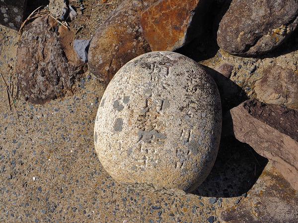
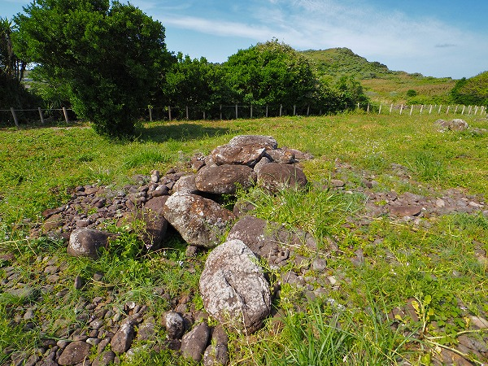

突然だが読者諸氏は
見島という島を御存じであろうか？
知らない？無理もないっす。私もつい最近まで知らなかったもん。
この島を知るきっかけになったのは日本民俗学の泰斗、宮本常一師の山口県見島総合調査のレポート。
それによると見島には
実に魅力的な墓があるのだ。
どんな墓か、は後程述べるとしてその墓がどうしても見たくなり、見島へと向かう事となった。
という訳で見島の概要を少しだけ。
見島は山口県萩市の沖、45キロに位置する日本海の離島だ。
島の先は韓国で、いわゆる
国境の島である。
島へは萩港から船で渡ることになる。
…というわけで萩港。
港には高速船ゆりや号が停泊している。
事前のリサーチでは島には売店があるものの、それなりに必要な物資（酒とかツマミとか酒とか酒とか）を萩市内で揃えて船に乗り込む。
ちなみに港の待合所にも売店などは一切ない。
という訳で、いざ出航！
絶海の孤島というだけにそれなりの揺れを覚悟していたのだが、高速船だからだろうか、思いの外快適な船旅だった。
うつらうつらすること1時間強、見島が見えてきた。
で、到着。
船着き場はごく簡単な待合小屋しかなく、数名の乗船客も出迎えの車に乗り込んで早々にいなくなってしまった。
自衛隊のトラックが隊員を出迎えに来ていたのが国境の島っぽかった。

見島は鬼ようずという凧と鬼の舞が有名なのだとか。
誰もいなくなった港でこれからどうしようか途方に暮れる。
観光案内図を見る。
船が着いたのは島の南端にある本村港。
墓は港からすぐ近くなので、一旦港近くの宿に荷物を置いてから墓地に向かうとしよう。
ひっそりとした港町を歩く。
離島の昼下がり、家は密集しているが人の気配はほぼない。
街中が催眠術にかけられて眠っているようだ。
駐在脇にあった男根のような石。
これは笠石といい、男根を模した石で、この石の上に小石を乗せると子宝に恵まれると言われている。
これが鬼ようず。
実際には紅白のだんだら模様の足が付く。
目から血が出てるみたいで不気味だ。
島の名産、見島牛。
国指定天然記念物で、和牛の原形と言われている。
小さな火力発電所の脇にも笠石があった。
やはり小石が置かれていた。
赤瓦の屋根を見ると山陰に来たなー、と思う。
港町をぶらぶらとしているといつしか人家も途切れ墓が見えてくる。
コレが見島の墓である。
まるで石の要塞のようだ。
墓地の入口にあった台は土葬の頃、棺桶を置いて読経をした場所だろうか。
この石垣は一軒ごとに囲われている。
それらが有機的に繋がって巨大な要塞のようになっているのだ。
まるで日本海の孤島にひっそりと、しかしどっしりと存在する
日本のマチュピチュのようだ。
墓地は道を挟んで海に面している。
海に近い方は丸石を積んだ石垣だが、先程の棺台があった海からやや離れた辺りは四角くカットした石材を使っていた。
つまり海に近いところから墓を造り始め、徐々に内陸側に増えて行ったのだろう。
一番海側の石垣。

卵のような白くて丸い石があった。
見ると戒名が刻まれている。
享和…だろうか？だとすれば19世紀の初頭にはこの場所に墓が造られていたという事になる。
ちなみに見島だけでなく、山陰地方全域でかつては卵型の石をハカジルシとして設置した。
無縁になってしまい草が生い茂っている。
一軒一軒の墓は四角く区画されている。
隣同士の石垣は共用している。つまりくっ付いているのだ。
グーグルマップで見るとこんな感じ。
墓地全体の形状としては東西に横長で、南側が海、北側が田んぼ、東側に山、西側に街と港、といった塩梅。
昔見たアフリカのとある集落の平面図と驚くほどよく似ている。
自然発生的に出来た墓地であることが良く判る。
↑大まかな平面はこんな感じ。
▲はそれぞれの墓の入口。
これだけ整然と区画してある割には
入口がまちまちなのが不思議だ。
何らかの理由があるのだろうか？
角卒塔婆が建っている墓。
墓も様々な形状が混在している。
コレは想像だが、離島という事も併せて比較的近年まで土葬が行われていたのではないだろうか。
それだけに
江戸から現代までの様々な時代の様式の墓があるのではなかろうか。
これも古い墓。
天保か天明…どっちかなあ。
今風の墓石も建っている。
この狭い通路でどうやってこんな大きな墓石を運び込んできたのだろう？
現代的な墓石が建つ墓には卒塔婆があがっているところもある。
本村にはお寺はひとつしかないから全部同じ宗派（浄土宗）なはずだが、卒塔婆があがっている墓は数えるほどだ。
これもまた墓の形状が様々だからだろう。

海側と田んぼ側を南北に結ぶ通路は数か所設けられている。
この墓地には東西を中央に貫くメインの通路は存在しない。
海側と田んぼ側の車道から直接アクセスするしかないのだ。
その南北の通路とて一直線ではなく、曲がりくねっていて、行き止まりになったりするところもある。
まるで迷路のような通路を行ったり来たりしているとこの墓地がひとつの街のように思えてくる。
そう、この墓地は本村の集落と対をなす
「死者の街」なのだ。
田んぼ側の車道沿いに無縁になった墓石が積み上げられていた。

石塔だけは一か所に集められていた。
恐らく島を離れて、面倒が見られなくなった墓なのだろう。
無縁墓の問題は今や全国的な問題だが、離島においてはさらに深刻な問題であろおうことは想像に難くない。
中には墓石や台石を石垣に再利用しているところもある。
何故か日蓮宗の石碑も。
この集落の菩提寺は浄土宗だが。さて。
石垣のさらに上にブロックを積み上げた墓。
一番海側はブロックで囲った墓が並んでいる。
一番新しい墓なのだろう。

海側の車道から見た墓地。
地元の人が犬の散歩をしていた。
防波堤から眺めてみる。
ホント、マチュピチュみたい。
再び墓地の中に入ってみる。
何度出入りしても飽きないほど面白いのよ。
墓石の脇にある新しい箱状のモノは火葬した骨を納める唐櫃（カロート）なのだろうか？
比較的最近埋葬されたと思わしき墓。
新しい膳と野位牌があった。
ここにも卵型のハカジルシ。
このように土葬の記憶を色濃く残す墓もあれば火葬に即した墓もある。
数十年間の葬送史が同じ場所に並列するところが実に興味深い。
墓地の近くにあった地蔵堂。
ここにも樒が捧げられており、島の人達に大事にされているのが良く判る。
墓地の北側には水田が広がる。
奥には離島では珍しい見島ダムが見える。
この水田は八町八反と呼ばれている。
離島では珍しく米作が盛んなのだ
田んぼ側から見た墓地。
見島の米作には不思議な伝説がある。
昔、隣の相島に観音像が流れ着いたが、拾われる事なく次に見島に流れ着いた。
見島で拾われた観音様は嬉しくなり「肥しのいらぬつくりをさせる」と言ったという。
実際、見島は離島にしては珍しく土質が良く米の生産も盛んなのだ、という。
墓の隣、物見山の東側には
ジーコンボ―と呼ばれる古墳群がある。

古墳、といっても墳丘があるわけでなく、7世紀頃の石室の跡が残るばかりである。
ジーコンボ古墳跡の近くにある民家。
やはり、墓地同様、石積みの壁が造られている。
何故こんなに石が積まれるのだろう？
その問いは案外あっさり解決した。
ジーコンボー遺跡や墓地のすぐ南は海で、海岸には見渡す限り
石垣に使えそうな手頃な石がゴロゴロしているのだ。
つまり利用できる素材がありき、という事なのだろう。

島を散歩していると集落の西端近くに吉祥寺というお寺がある。
宗派は浄土宗。
本堂の隣には位牌堂があった。
こちらも花が手向けられていたが、多くは造花だった。
島の人達は朝や夕方に墓参りをする。
島のあちこちで何故この島の墓は石垣で囲われているのか、と聞いてみたが皆一様に
風が強くて仏様が可哀想だから、と言う。
確かに日本海の孤島ゆえ冬などは風も強かろう。
ただ、風の強い場所などいくらでもあるのでそれだけが石垣を造る理由とは思えないのだが。
大いなる疑問を残しつつ、島の北側にある集落へと行ってみることにした。
見島の墓と宇津山観音寺；その2へ